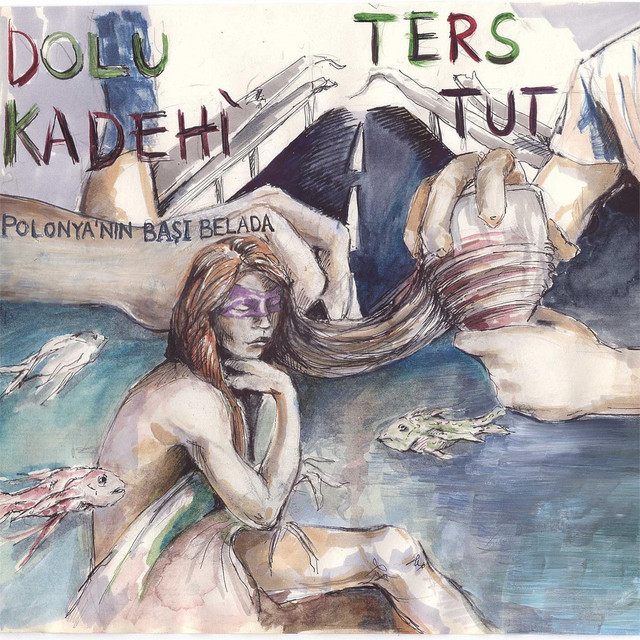
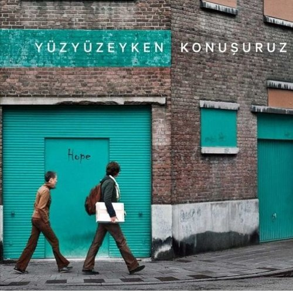
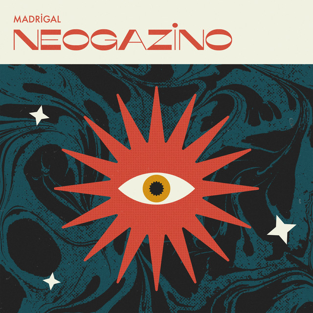
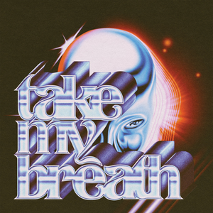
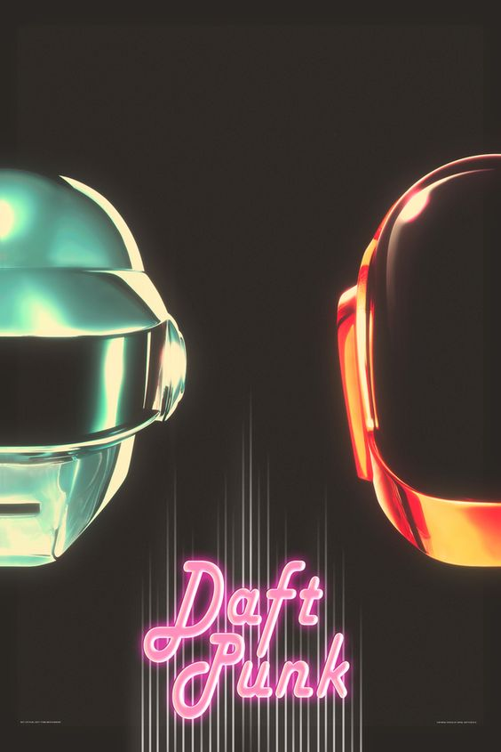

Dolu Kadehi Ters Tut
Albümün adı: Polanyanın başı belada ,toplam 15 şarkıdan oluşuyor. Bunlar:
- Polonya'nın Başı Belada
- Portakallı Pekin Ördeğim
- Yakarlar
- Herşeyim ol
- Aldattın Mı
- Deliyim Ben
- Yapma N'olursun
- Filozof
- Peygamber Vitesi
- Ev Boş
- Uyumadan Önce
- Değiştim
- Nasıl Kalalım Ayrı
- #21
- Balkabaklı Dondurma

The Weeknd
Albumun adı: After Hours , toplam 14 şarkıdan oluşuyor. Bunlar :
- Alone Again
- Too Late
- Hardest to Love
- Scred to Love
- Snowchild
- Escape From La
- Hearthless
- Faith
- Blindig Lights
- In Your Eyes
- Save Your Tears
- Repeat After Me
- After Hours
- Until I Bleed Out

Yüzyüzeyken Konuşuruz
Albüm adı: Akustik travmalar , toplam 9 şarkıdan oluşuyor. Bunlar:
- Kadıköy Kızı
- Dinle Beni Bi'
- Esen
- Sandal
- Bodrum
- Yıkılma Sakın
- Onlarda Yansın
- 2013
- Uykusuz ve Dengesiz

Madrigal
Albüm adı: neogazino, toplam 7 şarkıdan oluşuyor. Bunlar;
- M.I.T
- Ne Zamandır Sendeyim
- Dip
- Bambaşka
- Aynadaki Görüntün
- Bizim Olsalar Yeter
- Outro

Take My Breath(The Weeknd)
Solo parçası
- Take My Breath

Daft Punk
Albüm adı: random Access memories ,toplam 13 şarkıdan oluşuyor bunlar:
- Give Life Back To Music
- The Game of Live
- Giorgio by Moroder
- Within
- Aldattın Mı
- Instant Crush
- Lose Yourself To Dance
- Touch
- Get Lucky
- Beyond
- Motherboard
- Fragments of Time
- Doin it Right
- Contact